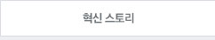
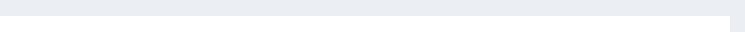
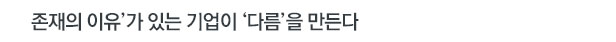
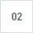

![1. 들어가며 - 고객의 선택을 받아야만 살아 남을 수 있는 기업에게 차별화는 생존과 연결된 절박한 과제이자 숙명이다. 그라나 경쟁 참여자들이 서로를 의식하게 되고 상대방의 강점을 계속 모방하면서 서로 닮아가게 된다. 이러한 상황 속에서 진정한 차별화를 이루기 위해서는 남들이 모방할 수 없는 우리 고유의 무엇인가가 제품에 담겨있어야 한다. “우리는 왜 존재하는가?(Why)”의 질문으로부터 출발할 때 남들과의 ‘다름’은 분명해진다. 왜 존재하는가에 대한 답변은 전략, 운영 등 기업 전반의 경영 프로세스(How)를 거쳐 제품(What)에 담겨져 고객에게 전해진다. 고객은 제품을 선택하고 사용하면서 제품에 담긴 기업의 존재 이유를 경험하게 된다. / 2. 사례 - 코코 샤넬이 제품을 직접 만들었던 샤넬 초기, 그녀의 작품들은 기존의 상식을 깨뜨리는 그 누구도 상상하지 못했던 혁신이었다. ‘여성복의 혁신’이라 불리는 샤넬 슈트를 완성시킨 그녀는 자신의 성공 비결에 대해 “나는 누구와도 같지 않았다”고 말했다. 샤넬의 성공비결은 바로 ‘다름’이었다.](img/issue0209.jpg)